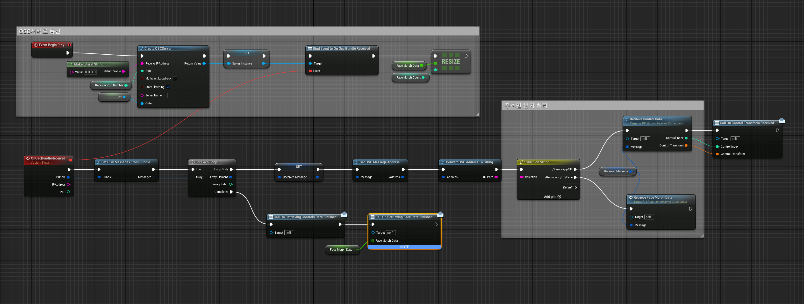

시연 영상

1. 무대 액터 배치 시스템
- 하늘(Sky) · 테마(Theme) · 지면(Floor) · 이펙트(VFX) 4가지 카테고리를 독립 조합하는 모듈형 무대 구성
- 테마 선택 시
StreamLevel동적 로드/언로드 — 이전 레벨을 0.2초 간격 지연 타이머로 순차 언로드하여 비동기 충돌 방지 - 액터 태그(VFX · Floor · Skybox · Theme) 기반 일괄 Destroy 후 재스폰으로 깔끔한 교체 처리
SceneCaptureComponent2D+UTextureRenderTarget2D로 현재 카메라 시점 실시간 캡처하여 썸네일 생성- 서버/클라이언트 분기 처리 —
CreateDummyStage()로 클라이언트 프리뷰 동기화 제공
- 구현 —
Sky,Theme,Floor,VFX를 독립 카테고리로 나누고, 선택된 조합에 따라StreamLevel을 동적으로 로드/언로드했습니다. 교체 시Actor Tag기반으로 기존 배치 오브젝트를 정리하고,SceneCapture로 현재 무대 썸네일을 생성했습니다. - 결과 — 관객이 선택한 무대 조합을 즉시 프리뷰하고 썸네일로 확인할 수 있어, 가상 콘서트의 핵심 경험인 무대 커스터마이징을 시연 가능한 수준으로 완성했습니다.
// 실제 구현 요약 - 테마 선택 시 새 레벨 로드, 이전 레벨은 지연 언로드 void AJJH_SelectManager::ChangeMap(int32 Index) { FindActorAndDestroy(TEXT("Theme")); Stage.theme = Index; for (const FName& Level : Levels) LevelsToUnload.Add(Level); FName LevelToLoad = Levels[Index - 1]; LevelsToUnload.Remove(LevelToLoad); UGameplayStatics::LoadStreamLevel(GetWorld(), LevelToLoad, true, true, FLatentActionInfo()); float UnloadDelay = 0.4f; for (const FName& LevelName : LevelsToUnload) { FTimerHandle UnloadTimerHandle; GetWorld()->GetTimerManager().SetTimer( UnloadTimerHandle, [this, LevelName]() { UGameplayStatics::UnloadStreamLevel(GetWorld(), LevelName, FLatentActionInfo(), true); }, UnloadDelay, false); UnloadDelay += 0.2f; } } void AJJH_SelectManager::FindActorAndDestroy(FName Tag) { TArray<AActor*> Actors; UGameplayStatics::GetAllActorsWithTag(GetWorld(), Tag, Actors); for (AActor* Actor : Actors) if (Actor) Actor->Destroy(); }
2. 버튜버 모델링 적용
VRM4U플러그인을 통해VRM형식의 버튜버 모델을 언리얼 엔진에 임포트 및 적용- 게임 플레이 중 스켈레탈 메시를 런타임에 동적 교체하여 공연 도중 의상 및 모델 전환 구현
- Morph Target 제어를 ARkit과 연동하여 카메라 기반 실시간 표정 변화 반영
Remocap기반 전신 모션 캡처 데이터를OSC서버로 수신하여VRM모델 뼈대에 적용
- 구현 —
VRM4U로VRM모델을 언리얼에 적용하고, 선택한 모델 번호를Server RPC로 전달한 뒤Multicast RPC로 관객 메시 교체를 동기화했습니다. 표정은Dynamic Material파라미터와Morph Target제어를 연동했습니다. - 결과 — VRM 모델 교체와 표정 변화가 공연 흐름 안에서 동작하도록 연결해, 단순 캐릭터 선택이 아니라 버튜버 공연 연출에 필요한 아바타 적용 흐름을 만들었습니다.
3. RemoCap UDP/OSC 본 데이터 손실 초기화
- RemoCap 앱의 본(Bone) 데이터 전송 방식을 분석하여 기존 로직의 데이터 손실 원인 파악
UDP기반OSC프로토콜로 수신 구조 수정 —Unreal OSC플러그인의Create OSCServer기반 수신 구조로 변경하고, 메시지 번들 수신 이벤트 중심으로 처리 로직 재구성OSC주소(path)별 분기 처리로 본 데이터와 페이스 데이터를 안정적으로 수신
- 문제 — 기존 수신 로직은 RemoCap의 OSC 메시지 구조를 온전히 반영하지 못해 본 데이터가 손실되거나 일부 값이 초기화되는 문제가 있었습니다.
- 해결 —
Unreal OSC서버 기반 수신 구조로 바꾸고,OSC주소별로 본 데이터와 페이스 데이터를 분리 처리해 수신 안정성을 높였습니다. - 개선 — 이후에는 수신 데이터 검증 로그와 보간 처리를 추가해 순간 패킷 손실에도 모델 포즈가 튀지 않도록 개선하겠습니다.

4. 무대 설정 UI
- 날씨 · 테마 · 이펙트 · 지면 4개 카테고리 탭 — 탭 전환 시 해당 옵션 패널만 표시
- 선택된 카테고리 버튼에 Scale 1.1 렌더 트랜스폼 적용, 이전 버튼 원상 복귀로 현재 선택 상태 시각화
- Border 배열로 선택된 항목에만 SelectedBox 텍스처를 적용하는 하이라이트 시스템
WidgetSwitcher로 설정 → 캡처 확인 → 최종 확인 3단계 플로우 전환- 0.3초 지연 타이머로 UI 버튼 은닉 후 씬 캡처 — 버튼이 썸네일에 찍히는 문제 해결
- 스테이지 이름 입력 후 썸네일 + 설정 정보를
HTTP Multipart로 서버 업로드
- 구현 — SceneCapture로 만든 썸네일 이미지를 먼저 Multipart/form-data로 업로드하고, 서버가 반환한 이미지 URL을 무대 설정 JSON에 포함해 다시 전송하는 2단계 저장 흐름을 만들었습니다.
- 결과 — 사용자가 구성한 무대를 서버에 저장하고 목록에서 다시 확인할 수 있는 흐름을 만들어, 단발성 프리뷰가 아니라 공유 가능한 무대 데이터로 연결했습니다.
// 실제 구현 요약 - 썸네일 업로드 성공 후 Stage JSON 저장 요청으로 연결 void AHttpActor_KMK::OnReqMultipartCapturedURL(FHttpRequestPtr Request, FHttpResponsePtr Response, bool bConnectedSuccessfully, FStageInfo* Stage) { if (bConnectedSuccessfully && Response.IsValid() && Response->GetResponseCode() == 200) { Stage->img = Response->GetContentAsString(); ReqStageInfo(*Stage); } } void AHttpActor_KMK::ReqStageInfo(const FStageInfo& Stage) { FString JsonString; FJsonObjectConverter::UStructToJsonObjectString(Stage, JsonString); TSharedRef<IHttpRequest> Request = FHttpModule::Get().CreateRequest(); Request->OnProcessRequestComplete().BindUObject(this, &AHttpActor_KMK::OnReqStageInfo); Request->SetVerb(TEXT("POST")); Request->SetHeader(TEXT("Content-Type"), TEXT("application/json")); Request->SetContentAsString(JsonString); Request->ProcessRequest(); }
UI 플로우
무대 옵션 선택
→
실시간 프리뷰
→
썸네일 캡처
→
스테이지 이름 입력
→
서버 업로드 완료
핵심 기술
| 기술 | 적용 내용 |
|---|---|
StreamLevel | 테마별 레벨 동적 로드/언로드 — 지연 타이머로 비동기 충돌 방지 |
Actor Tag | 카테고리별 배치 액터 태그 식별, 교체 시 일괄 Destroy 후 재스폰 |
SceneCaptureComponent2D | 카메라 시점을 RenderTarget에 실시간 캡처, UI 썸네일로 표시 |
VRM4U | VRM 모델 임포트, 런타임 스켈레탈 메시 교체, Morph Target 표정 제어 |
UDP / OSC | FUdpSocketReceiver로 RemoCap 본 데이터 수신, 손실 시 리셋 로직 적용 |
UMG / WidgetSwitcher | 3단계 설정 플로우 전환 및 카테고리 탭 UI 구현 |
회고 및 개선 방향
- 무대 구성, 아바타 적용,
OSC수신,HTTP업로드까지 한 화면 흐름으로 묶어 시연 완성도를 확보한 점이 가장 큰 성과입니다. - 다시 설계한다면 무대 프리셋, 아바타 프로필, 서버 업로드 요청을 데이터/서비스 단위로 분리해 기능 추가 비용을 줄이겠습니다.
- 운영 수준으로 확장한다면
HTTP실패 처리,OSC수신 데이터 검증, 레벨 전환 큐를 보강하겠습니다.